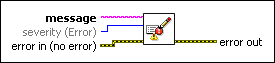
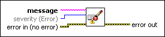

Write to System Log VI
Owning Palette: Dialog & User Interface VIs and Functions
Requires: Base Development System
Writes a message to the nierrlog system log for storage and subsequent viewing.

 Add to the block diagram Add to the block diagram |
 Find on the palette Find on the palette |
Owning Palette: Dialog & User Interface VIs and Functions
Requires: Base Development System
Writes a message to the nierrlog system log for storage and subsequent viewing.

| Add to the block diagram |
Find on the palette |
 |
message is the text to write to the system log. | ||||||
 |
severity specifies how the system log classifies the message.
|
||||||
 |
error in describes error conditions that occur before this node runs. This input provides standard error in functionality. | ||||||
 |
error out contains error information. This output provides standard error out functionality. |
You can view the messages this VI writes using the system log viewer for your operating system.
(Windows) Open the Application page of the Windows Event Viewer.
(macOS) Use Console to view the system log.
(Linux) Use a system log viewer appropriate to your distribution.
(NI Linux Real-Time) Open the System Log Viewer page of NI Web-based Configuration & Monitoring.
(Phar Lap ETS, VxWorks) Open the console. The messages display alongside other console output.